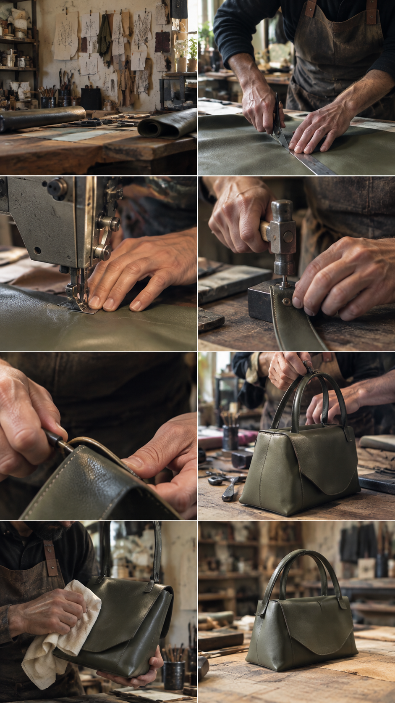
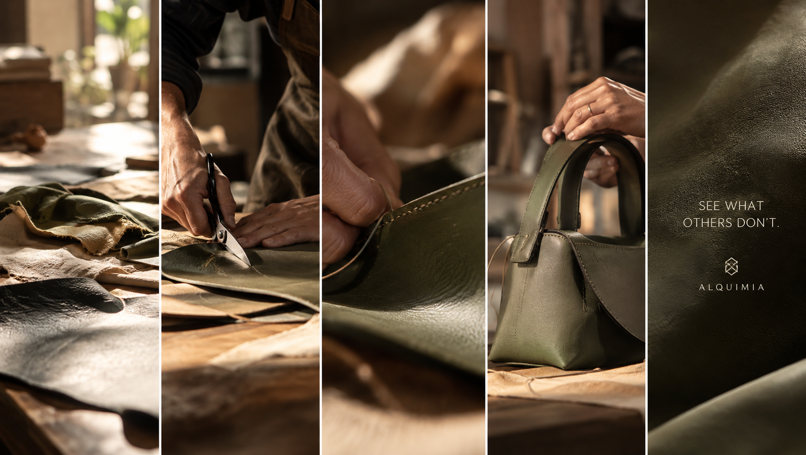

LO QUE YA EXISTE
PUEDE TENER
UNA NUEVA HISTORIA
Cambiar la mirada es el primer paso de toda transformación.

EL ALQUIMISTA
VE UNA POSIBILIDAD.
Donde otros ven un material que ya tuvo una vida, el Alquimista encuentra una posibilidad. Observa, selecciona, transforma y construye hasta convertir aquello que ya existe en algo nuevo.
La figura del Alquimista representa la mirada de Alquimia: no empezar siempre desde cero, sino aprender a ver de otra manera lo que ya tenemos delante.
Descubre el procesoDE LA MATERIA
AL DISEÑO.
La transformación ocurre a través de un proceso físico y creativo: elegir la materia, cortar, construir, trabajar los detalles y dar forma a una nueva pieza.

EL MATERIAL, SU HISTORIA,
EL PROCESO Y EL DISEÑO.
La materia no se presenta como un residuo, sino como el punto de partida de una nueva posibilidad creativa. Cada etapa conserva la conexión entre aquello que ya existía y lo que puede llegar a ser.